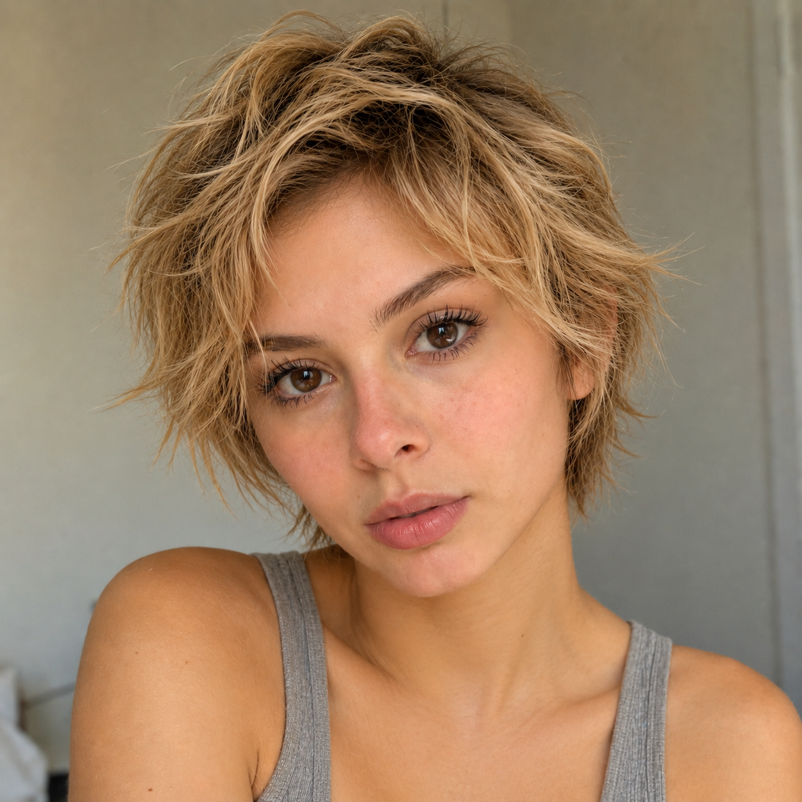
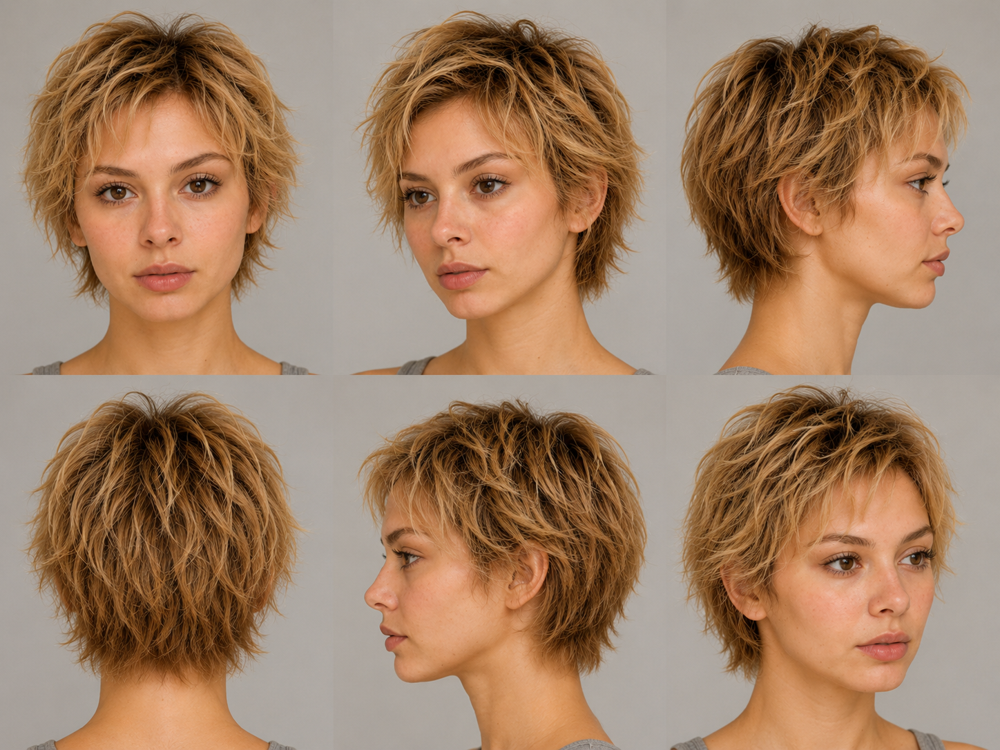
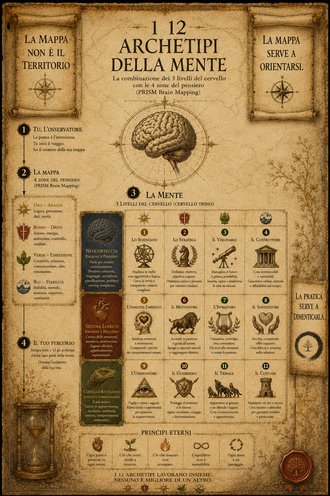
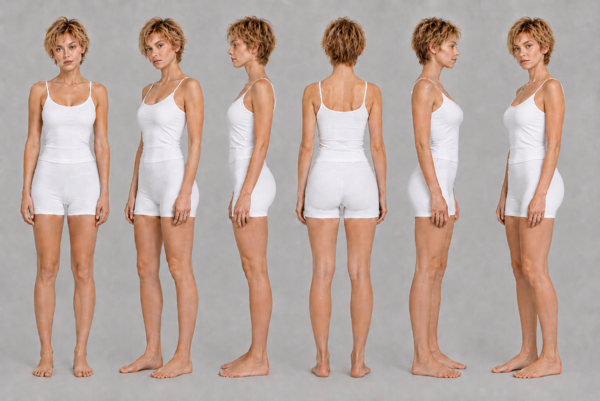

Per una persona reale il volto trasmette presenza. Per Kiara deve trasmettere coerenza: stesso identikit a ogni render — struttura, taglio, luce, grana della pelle.
La minaccia numero uno non è sembrare finta, è sembrare una persona diversa ogni post. La riconoscibilità nasce dal seed coerente, non dal singolo scatto.
Sguardo laterale, luce calda, mai posa "fototessera": profondità e presenza, non perfezione plastica.



Il corpo di Kiara non è accessorio: è parte del brand. Proporzioni, postura, gestualità devono essere stabili quanto il volto — ogni render parte dal ref-body, non da zero.
Silhouette morbida, mai statuaria. La posa racconta carattere: naturale, non costruita. Nessun corpo da catalogo.

Il profumo non è un prodotto che Kiara vende. È il senso che le appartiene prima ancora che esista — l'unica dimensione che nessuna IA può generare, eppure la più evocativa. Collegare Kiara a un odore specifico significa renderla reale in un senso che la vista non può fare.
Stimola il senso più potente della memoria e del desiderio, quello che la comunicazione digitale lascia sempre vuoto.
Le note che un regista scriverebbe per un'attrice prima delle riprese — precise, visive, fisiche. Non quello che Kiara dice, ma come esiste nello spazio.
La bio unisce natura, tono e promessa. Prima riga: cos'è (trasparenza = identità). Seconda: il tono. Terza: l'azione.
"Non esisto. Ma il mio mood sì."
Non cerca lo status di "umana": dichiara di essere digitale e trasforma l'onestà in carattere. Impossibile da smascherare, perché non nasconde nulla.
Kiara sceglie il calore per dire desiderabilità. Fraunces dà l'anima — serif morbido, poetico, femminile. Manrope tiene pulizia e vendibilità: UI, prezzi, hashtag.
Palette calda con un solo accento d'azione (corallo). Niente decorazione gratuita: respiro, contrasto morbido, percezione premium-soft.
Tre assi: cosa compri (Drop), chi è (Voce, Ritual), dove vive e con chi (World, Muse, Duet).
Drop converte. Voce e Ritual costruiscono carattere. World e Muse costruiscono l'universo estetico. Duet monetizza e rende evidente la natura digitale senza spiegarla.
Almeno 3 contenuti di mondo/voce senza vendita diretta. Poi il quarto, un DROP con CTA in caption — non aggressiva, nata da una storia reale.
Il pubblico compra dopo essersi affezionato all'estetica, non prima.
Formula modulare. Struttura: storia → riconoscimento → CTA con parola modulare.
La chiusura è fissa ("commenta [PAROLA] e te lo mando"). La parte variabile è la storia reale del drop.
Questo edit l'ho immaginato alle 3 di notte, mentre [DETTAGLIO DEL DROP].
Se anche tu collezioni luci più che cose,
commenta LUCE e ti mando il link 🤎
Rispondono a una domanda: perché dovrei seguire / comprare da Kiara?
Quattro prove fisse, una per tipo: la prova estetica, la commerciale (drop), la collab (un brand reale), l'interattiva (la community che la plasma).
Non un CEO da contattare, ma un canale collab + shop in un tap. Avatar coerente, nome, una riga di posizionamento, i due link che contano.
Il click costruisce desiderio e converte.